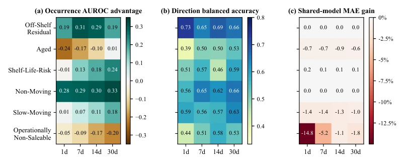
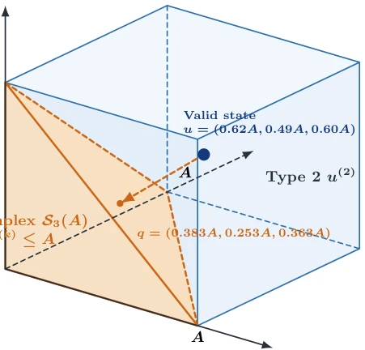

Figure 2: Loss-dependent movement phase transition. (a) Population MAE of persistence, always move, and the oracle gate. (b) Update probabilities for n calibration observations per group. Dotted lines mark the population boundary at q = 0.5.
Figure 3: MuJoCo results. (a) NMSE relative to persistence across horizons. (b) Selective NMSE reduction (%) relative to persistence at h = 20, with means and sample standard deviations across seeds. (c) Relative NMSE versus uncertainty-based update coverage, with shaded bands showing one standard deviation across datasets.

Figure 4: Diagnostics across six unhealthy-inventory types. (a) Occurrence-AUROC advantage over the strongest naive baseline. (b) Direction balanced accuracy. (c) Shared-model MAE gain (%) relative to persistence.
其他图片Other Figures

Figure 5: Overlapping-inventory geometry. In a three-type projection, the disjoint simplex (orange) excludes a valid state in the feasible box (blue). The dashed segment is its Euclidean distance to the simplex.